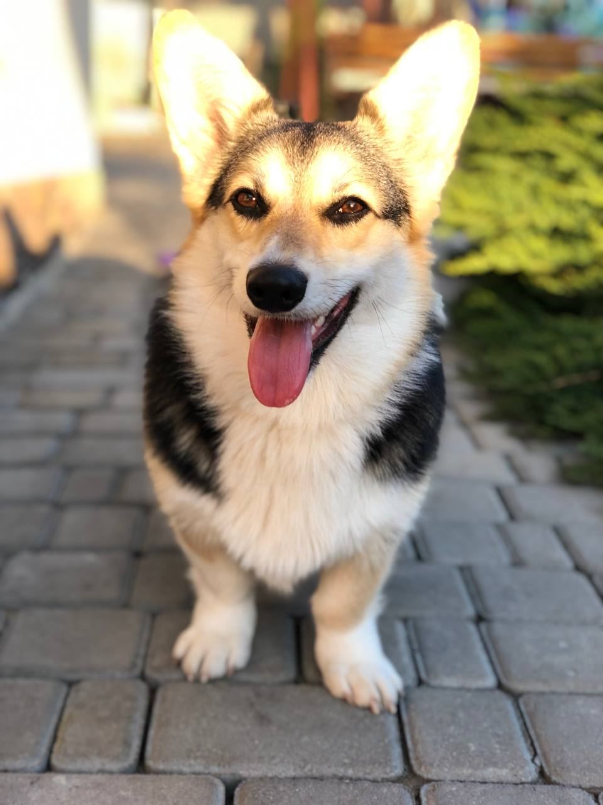

Мій домашній улюбленець
Моя собачка

Ім'я: Нора.
Стать: жіноча.
Порода: Вельш-коргі-пемброк.
Вік: 2,5 роки.
Характер: допитлива, грайлива, весела, любить бути в центі уваги, обожнює дітей та чоловіків.
Особливості Нори:
- розумна, але хитра (знає команди, але виконує їх коли хоче)
- ніколи не відмовиться від їжі (з рук буде їсти все що дадуть)
Улюблені іграшки: домашні капці, іграшки, які при натискані видають звуки.
Проблеми, з якими я стикнулася:
- Нора не любить самотності: коли мені треба було її залишити на 10 хвилин, рознесла половину коридору
- Коли її сварю через зіпсуті речі має вигляд собаки, яка шкодує про те що зробила, але через 10 хвилин знову посміхається, наче нічого не сталося
- Коли купую їй нову іграшку, для Нори це забава "на один зуб"
Контакти
Галерея